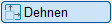
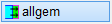
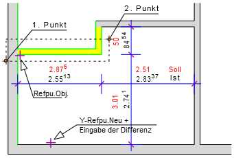
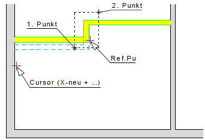
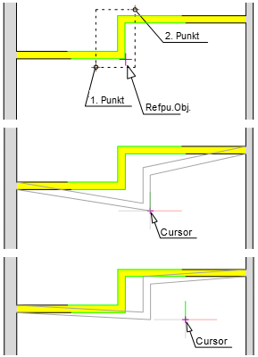
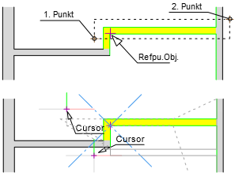

 ")
Im Gegensatz zum Verschieben [Konst1 | Versch] werden beim Dehnen auch angehängte Elemente mitgezogen. Diese Elemente erfahren so eine Dehnung bzw. Stauchung.
|
Achtung: Bewehrungen werden mit dieser Funktion u. U. nicht korrekt gedehnt. |
|
Verwenden Sie zum Dehnen oder Verzerren von Bewehrungen die Dehnen-Funktion im Formstahl-Menü. » Bewehrung dehnen |

|
Tipp: |
|
Wenn eine Teilzeichnung in zwei Richtungen gedehnt werden soll, gehen Sie in zwei Schritten vor, erst in die eine und dann in die zweite Richtung dehnen. |

So wird's gemacht:
§Ziehen Sie einen Rahmen durch das Anklicken von zwei Punkten um die zu dehnenden Zeichenelemente oder klicken Sie einzelne Elemente an. [1.Punkt/Element]; [2.Punkt].
-Die Teilzeichnung wird markiert. Zeichenelemente, die vollständig im Rahmen liegen, werden verschoben. Die Linien, die nur mit einem Punkt im Rahmen liegen, werden gedehnt oder gestaucht. Wenn Sie einzelne Linien anklicken, wird nur die angeklickte Teillinie markiert.
-Um Elemente wieder abzuwählen, klicken Sie im unteren Funktionsbereich auf Entfer. Ziehen Sie einen Rahmen um die entsprechenden Elemente oder klicken Sie einzelne Elemente an. Bei gedrückter Umschalttaste (Shift) wird automatisch der Entfer-Modus aktiviert – am Cursor wird ein Minuszeichen eingeblendet.
§Bestätigen Sie die Auswahl mit Rechtsklick.
§Klicken Sie einen Punkt als Referenzpunkt an. [Refpu.Obj].
Dies kann ein beliebiger Punkt sein. Der Cursor behält bei Mausbewegung den Abstand zum angeklickten Punkt bei.
§Wählen Sie, ob ohne Eingabe von Differenzen oder mit einer Differenzeingabe die Lage des angeklickten Referenzpunktes bestimmt werden soll. [X-Refpu.Neu]; [Y-Refpu.Neu].
|
Ohne Differenzeingabe: §Geben Sie die Abstände für X und Y zwischen Referenzpunkt und Zielkoordinate ein und bestätigen Sie jeweils mit der Eingabetaste. Sie können die Zielkoordinate auch durch Anklicken von Punkten bestimmen. |
|
Mit Differenzeingabe: §Klicken Sie ein Bezugselement an, zu dem eine Differenz eingegeben werden soll. §Geben Sie nach der Linienkennung den Abstand mit dem entsprechenden Vorzeichen ein und bestätigen Sie mit Eingabetaste. |


Die Teilzeichnung wird verschoben oder gedehnt.
Beispiel: Dehnen mit Retaus/Retan
Sie können die Beispielzeichnung mit [Konst1 | Linien] oder [Konst2 | Wandze] nachzeichnen.
Eingabeeinheit: m (Meter). Bestätigen Sie alle Eingaben mit Enter.
Dehnen mit Differenzeingabe (Retan)
 |
Beispiel 1 Schritt 1 §Ziehen Sie einen Rahmen um die Wand auf und bestätigen Sie mit Rechtsklick. [1. Punkt/Element]; [2. Punkt]. §Klicken Sie die untere Wandlinie an. [Refpu.Obj]. §Geben Sie den Wert 0 (Null) ein, damit keine Verschiebung in X-Richtung stattfindet. [X-Refpu.Neu]. §Schalten Sie die Differenzfunktion [Retan] ein. [Y-Refpu.Neu]. §Klicken Sie die Bezugslinie an und geben Sie nach der Linienkennung die Differenz +3.01 ein. Bestätigen Sie die Eingabe A16+3.01. Die Linienkennung (z. B. "A16" = Anfangspunkt der Linie Nr. 16) kann abweichen. Die Dehnung wird ausgeführt. |
 |
Schritt 2 §Ziehen Sie einen Rahmen um die Wand auf und bestätigen Sie mit Rechtsklick. [1. Punkt/Element]; [2. Punkt]. §Klicken Sie die untere Wandlinie an. [Refpu.Obj]. §Klicken Sie die rechte Seite der linken Wand an und geben Sie die Differenz +2.875 ein. [X-Refpu.Neu]. §Geben Sie den Wert 0 (Null) ein, damit keine Verschiebung in Y-Richtung stattfindet. [Y-Refpu.Neu]. |
Dehnen ohne Differenzeingabe (Retaus)
 |
Beispiel 2: §Ziehen Sie einen Rahmen um die Wand auf und bestätigen Sie mit Rechtsklick. [1. Punkt/Element]; [2. Punkt]. §Klicken Sie die Wandecke an. [Refpu.Obj]. §Stellen Sie sicher, dass die Funktionen [Retaus], [EleAn] und [Or aus] eingeschaltet sind. [X-Refpu.Neu]. §Klicken Sie eine beliebige Stelle der Zeichenfläche an. Die markierten Elemente sind bei Mausbewegung als Voransicht an den Cursor gehängt. §Klicken Sie die linke Maustaste. [Y-Refpu.Neu]. Wenn Sie den Cursor bewegen, werden die markierten Elemente nur in vertikaler Richtung bewegt. §Schalten Sie die Funktionen [Retaus], [EleAn] und [Or an] ein. [X-Refpu.Neu]. Befindet sich der Cursor in einem Sektor zwischen 315° und 45° wird nur horizontal nach rechts gedehnt, zwischen 45° und 135° wird nur nach oben gedehnt. §Klicken Sie eine beliebige Stelle der Zeichenfläche an. Die aktuelle X- oder Y-Koordinate wird übernommen. §Klicken Sie ein Zeichenelement an. Je nach Lage des Cursors an dem Element wird die X- bzw. Y-Koordinate des Anfangs-, Mittel- oder Endpunktes übernommen. |
 |
Beispiel 3: §Ziehen Sie einen Rahmen um die Wand auf und bestätigen Sie mit Rechtsklick. [1. Punkt/Element]; [2. Punkt]. §Klicken Sie die Wandecke an. [Refpu.Obj]. §Schalten Sie die Funktionen [Retaus], [EleAn] und [Or an] ein. §Bewegen Sie den Cursor an eine beliebige Stelle und klicken Sie die linke Maustaste jeweils für die X- und Y-Koordinate. [X-Refpu.Neu]; [Y-Refpu.Neu]. Die Zeichenelemente werden bis zur Cursorposition gedehnt. |
Zugehörige Referenzen: